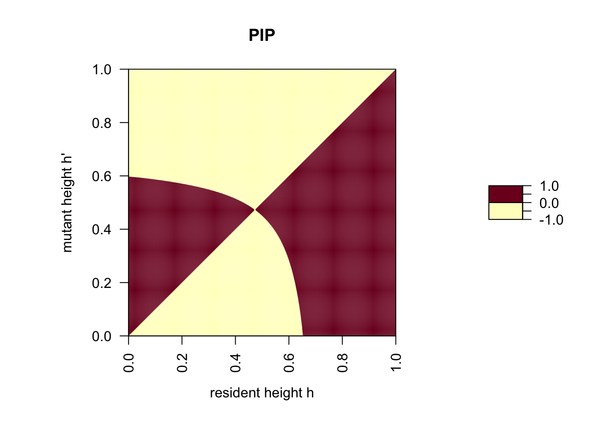

Let us now assume that seeds do not disperse far so that new plants grow next to their mother plant. Mother plants and their offspring share the gene for tree height by common descent with probability \(r\), the relatedness coefficient. The payoff to a rare mutant with allele \(h'\) is then given by
\[ \begin{align} W(h', h) & = r w(h', h', h) + (1 - r)w(h', h, h) \\ & = r f(h')g(h', h') + (1 -r) f(h')g(h', h), \end{align} \] where \(w(h', h_{\mathrm r}, h)\) is the payoff to a focal plant with height \(h'\) growing next to a plant with height \(h_{\mathrm r}\) in a population where the height of the resident plants is \(h\). With probability \(r\) the focal individual and the interacting individual share the gene for plant height by common descent, in which case \(h_{\mathrm r}=h'\), and with probability \(1-r\) the focal individual and the interacting individual do not share the gene for plant height by common descent, in which case \(h_{\mathrm r}=h\).
For the moment, let us use the same functions \(f\) and \(g\) as in the unmodified plant height game, namely
\[ f(h)=1-h^\alpha, \]
and
\[ g(h', h)=P_L+\frac{P_H-P_L}{1+\exp\left(-\beta(h' - h)\right)}. \]
f <- function(h) {# amount of leaf biomass as a function of tree height
1 - h^alpha
}
g <- function(h.m, h.r) {# photosynthetic rate as a function of difference in tree height
P.L + (P.H - P.L)/(1 + exp(-beta*(h.m - h.r)))
}To determine whether selection favors increased values of \(h\), we could take the partial derivative of \(w(h', h)\), evaluated at \(h' = h\), with the aim to recover Hamilton’s rule. Next, let us plot a PIP to investigate the effect of kin selection on ESS tree height. For this, we compute invasion fitness, here defined as the difference in payoff between mutant and resident.
\[ \begin{align} s(h', h) & = W(h', h) - W(h, h) \end{align} \]
w <- function(h.m, h.r) {# payoff
r * f(h.m) * g(h.m, h.m) + (1 - r) * f(h.m) * g(h.m, h.r)
}
s <- function(h.m, h.r) {# invasion fitness defined as the difference in payoff
w(h.m, h.r) - w(h.r, h.r)
}r <- 0.5
alpha <- 3
beta <- 5
P.L <- 0.25
P.H <- 1
PIP <- outer(seq(0, 1, 0.005), seq(0, 1, 0.005), s)
# the computes s(h', h) for all combinations of h' and h
par(pty="s")
filled.contour(t(PIP), levels = c(-1, 0, 1), main = "PIP", las = 2,
xlab = expression("resident height h"),
ylab = expression("mutant height h'"))
As we can see, kin selection reduces the ESS plant height from approximately 0.62 to approximately 0.5.
We can understand this result by looking at the derivative
\[ \begin{align} \frac{\partial W(h', h)}{\partial h'}\bigg|_{h' = h} & =\frac{\partial}{\partial h'} (W(h', h)w(h', h', h) + w(h', h, h))\big|_{h' = h} \\ & = \frac{\partial}{\partial h'} (r f(h')g(h', h') + (1 -r) f(h')g(h', h))\big|_{h' = h}, \\ \end{align} \]
which becomes
\[ \begin{align} \frac{\partial W(h', h)}{\partial h'}\bigg|_{h' = h} & = \underbrace{\frac{\partial}{\partial h'}(f(h')g(h', h))}_{costs} + r \underbrace{\frac{\partial}{\partial h}(g(h', h))}_{-benefits}. \end{align} \]
First, let us note that in the plant height game, growing less tall can be considered an act of altruism (if the costs of doing so are positive) or an act of cooperation (if the costs of doing so are negative). This is the reason why in the above equation, the first term is defined as \(c\) and the second term as \(-b\) (compare with the corresponding equation in the self-sacrificing game). The cost-term describes the effect of changing the strategy value \(h'\) of the actor on the payoff of the actor itself. This term is negative when the \(h'>h^*\), where \(h^*\) is the evolutionary stable strategy value in the absence of kin competition, and positive in the reverse case. The benefit-term describes the effect of a trait change of the interacting individual (the recipient) on the payoff of the actor. This term is always negative (if the neighboring plant grows higher, the focal individual is more shaded). This analysis shows that competition with kin always selects for a lower ESS-value compared to the model without kin selelction.